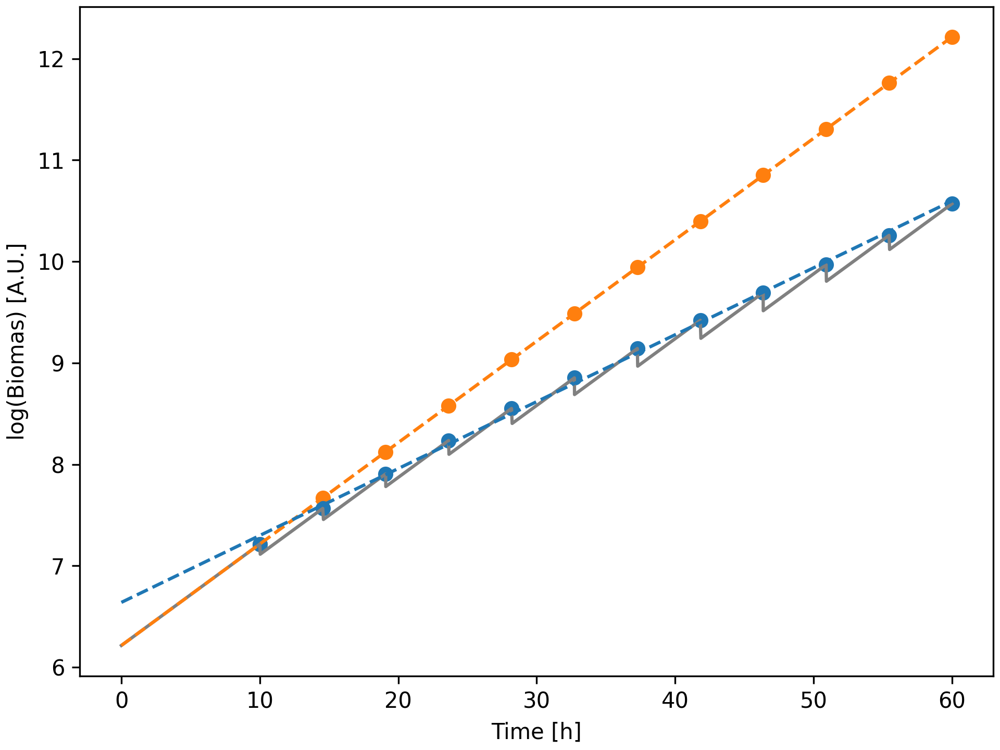

Welcome to Pseudobatch’s documentation!#
When conducting a fed-batch fermentation, one often collects samples during the process and uses these to estimate rates and yields. Unfortunately, when samples are collected the underlying mass evolution curve becomes discontinuous. This makes it difficult to estimate the rates and yields from the data. The pseudobatch package is a tool to transform concentration measurements from a fed-batch reactor into a space where the underlying mass evolution curve is continuous. This allows for easy estimation of rates and yields from the data and enables use of more advanced statistical models such as Gaussian process regression, splines estimation and dFBA.
In the following figure, a simulated exponential fed-batch process of substrate limited growth is shown (grey line). The growth rate is estimated using the measurements at the sampling points (blue dots and line). The measurements are then transformed into a pseudo-batch space (orange dots). The growth rate is estimated using the Pseudo-batch transformed data (orange line). The growth rate estimate using the Pseudo-batch transformed data is correct, while the growth rate estimate using the measurements at the sampling points is incorrect. This is also visually evident by the fact that the orange line has the same slope as the grey line, while the blue line has a different slope.
{kind=link}

Contents:
- Installation
- Tutorials
- Perform Pseudo batch transformation
- Estimating overall rates and yields from pseudo batch transformed data
- Estimate time series parameters using pseudo batch transformed data
- Dealing with multiple feeds
- Read in and process data from the Excel template
- Real world example: Yeast Biolector Fermentation
- Pseudobatch transformation with uncertainties
- FAQs
- Api Reference